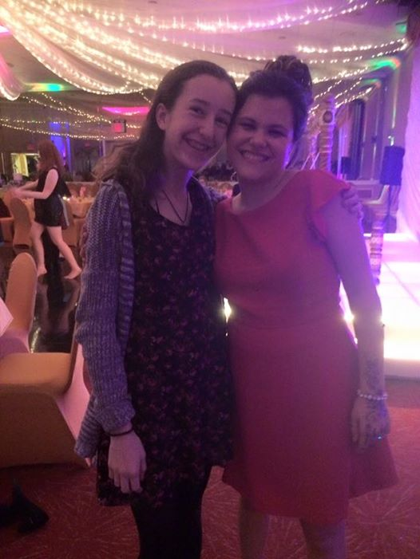
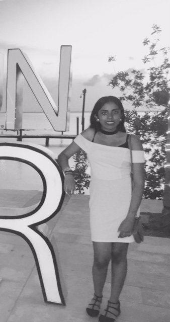

Aoife lives in New York with her three sisters, her parents, and her dog. She is a rising senior at Mamaroneck High School and loves math and computer science, two things which she is likely to study at College. Aoife has lived in various countries including Ireland, England, and currently, the US. She wants to work in technology or mathematics when she's older.
Kiara Cuba
Kiara lives in Queens, New York City with two of her three sisters, her mom, her step-dad, and her dog. She attends Math, Engineering, and Science Academy, and will be a senior there next year. In her free time, Kiara likes to write.
Adoma Amoah-Mensa
Adoma Amoah Mensah Is 17 years old and currently lives in the Bronx with her two siblings along with her parents. Although She lives in the Bronx she attends school at Frederick Douglass Academy 1 in Harlem . In this upcoming school year Adoma will be a high school senior who is ready to have the world at the palm of hands. A motto that she goes by everyday is " There is no elevator to success you have to take the stairs". Adoma has hopes to pursue computer science and medicine as her majors in her dream college Cornell .
Kavita Shivram

Kavita is a rising junior at Townsend Harris Highschool, and lives in Queens. She loves exploring different cultures, as well as taking an active role in politics in hopes of improving the world. She aspires to major in either techonology or medicine in the future.